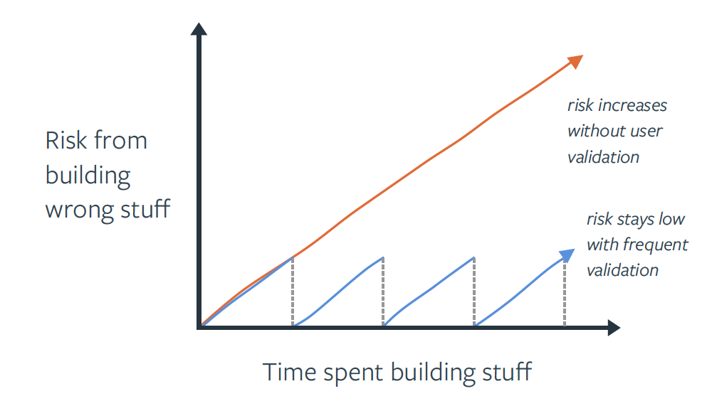

Managing Assumptions & Risk
What is it?
We should always expect to deal with both assumptions and risks when executing projects, and delivering products and services. It's also very easy to form the opinion that assumptions and risks are the same thing. Afterall, every assumption carries a potential consequence, thus a risk! While this statement is true, there are intentional practices that we employ to best manage these for specific purposes.
Said another way, attempting to eliminate all risks is not only futile due to limited resource constraints, it is also an anti-pattern to not take bold, calculated, risks when shipping software with assumptions that can only truly be validated once we are in production. Therefore, this practice is both an art and a science. We need to surface assumptions and risks early and often, quantify them, track them, and deliberately burn down the most critical items through experiments, engineering practices, and operational guardrails—so we ship outcomes in prod with confidence and pace.
Below is a high-level framing to help ground ourselves in the differences between Assumptions Management and Risk Management before we get into the details.
| Practice | What are they? | When do they come into play? | Timing example |
|---|---|---|---|
| Assumption Management | Things we believe to be true, with varying degress of confidence, that we want to test and validate with empirical evidence to support timely, strategic, decision-making. (think play calling) | Everytime we're in a decision-making flow, based on available signals (i.e. anything between a gut feeling to having non-causal data or insights), and we desire at least an absolute conclusion. | Supporting every strategic decision → A reseach guide consolidates assumptions we want to validate and learn about current conditions; Ideation for solving user pain-points that lead to mission impact aligns teams on assumptions we test before or after launching them; Preparing story's and questions for a stakeholder call that influences alignment, prioritizes assumptions that we will validate with realtime reactions and decisions. |
| Risk Management | Things that could impact our ability to achieve our goals, ranging from annoyance to completely blocking or killing our efforts. (think blocking and tackling) | Risks can show up as early as prior to, or at the start of, a new project. Constraints could exist before we even attempt to deliver a new product or service. | Before we even begin our contract → Because it takes 6 months to obtain AWS accounts from our supplier, we’re less likely to ship our MVP product before end of fiscal year, resulting in 0% percent chance of securing next fiscal year funding. |
Why do it?
Throughout a product’s lifecycle, it’s helpful for teams to articulate, prioritize, track and regularly revisit their assumptions and risks. If you haven’t released software in awhile, your product is likely full of assumptions that may or may not solve a real problem for your users, or meaningfully impact the mission. This is certainly the case when we are in the early stagees of a product’s lifecycle, delivering an MVP experiment to prod.

Here are some principles to live by when managing assumptions and risks
- Outcomes over outputs - Writing down the assumptions and risks about the product, our users, technical feasibility, dependencies, solutions etc. helps the team gain a shared understanding of what underlying beliefs the team has about what needs to be true in order for a product or our current project to be successful.
- Learning velocity - Systematic assumption testing and continuous delivery reduce the cost and risk of change—empowering us to learn in prod.
- Mission and compliance - RMF + continuous monitoring turns security/privacy risk into a daily habit, not a once-a-year scramble; it’s also foundational to cATO.
- Prioritize resource energy - It’s important to understand, as a team, which assumptions are the riskiest (i.e. which ones, if proven wrong, could risk the success of our product or current project) so you can engage in activities to help de-risk those assumptions.
- Maintaining flow - Tracking the assumptions and the evidence that adds validity (or removes validity) to the assumption is helpful in making decisions on whether to pivot or persevere. If a key assumption you made early on in the product life cycle turns out to be incorrect- it’s important to evaluate how that assumption being invalidated informs what you do next as a product team.
- Comfortable accepting risk - Tracking and de-risking assumptions also allows teams to feel more confident that the product they’re building and releasing will be desirable, viable & feasible to build.
How to do it?
Facilitate a recurring conversation
Assumption and risk management starts with a facilitated conversation that focuses on generating concerns that may cause us to not meet our goals, or not achieve desirable outcomes in production with our customers. Whether you're using sticky notes, or a digital whiteboarding solution, we recommend checking out our Assumptions/Risks Workshop Play for a detailed guide on how to facilitate this conversation. Running this formal exercise should happen as often as the team makes strategic prioritization decisions, because managing risk is a critical component of establishing and managing strategy.
Risk tracking
Whether you're completing formal exercises as part of contract kick-off, starting a new project, or simply recognizing new risks on a day-to-day basis, it's important that delivery teams make risks visibile to everyone, so that we can prioritize and strategize how we will manage them. At Rise8 we recommend teams create their own copy of our Risks Tracker template to do this. Below you'll find detailed definitions to assist in your adoption of this standard artifact.
Risk categorization
When discussing risks, we categorize potential issues within the areas of product, technology, customer, and team. Teams always have the flexibility to add additional categories that are relevant to their situations. Here's an example of how to categorize risks across these areas:
Product
- Value Risk: The risk that customers won't find the product useful or valuable.
- Usability Risk: The risk that users won't be able to use the product effectively.
- Business Viability Risk: The risk that the product won't fit the strategic goals.
Customer
- Customer Experience Risk: Risks related to poor customer service, negative perceptions, or failure to meet customer expectations
- Customer Management Risk: Shifts in customer preferences, or changes in the competitive landscape can impact customer relationships
Technology
- Technical Feasibility: The risk that the team can't build or maintain the product due to technical challenges.
- Technology Failures: Issues with system failures, bugs, data breaches, or the failure to adopt new technologies.
- Cybersecurity: Risks associated with data breaches, malware, and unauthorized access to technology systems.
- Operational & Third-Party Risks: Failures in technology systems, downtime, or issues with vendors providing technology services.
Team
- Resource Allocation: Lack of internal resources, including the right technology.
- Skill Shortages: Not having enough people with the necessary skills to meet project needs.
- Organizational & Project Management Risks: Inefficiencies in internal processes, poor planning, or misalignment with project goals.
Risk/Blocker, course of actions (COA) & support asks statement format expectations
Below are examples of our preferred format for capturing risk statements, because they clearly and succinctly specify the causal effect between the conditions that lead to a measurable impact.
If [conditional context] is true, then [measurable consequence]
Because of [condition context], we’re more/less likely to [event], resulting in [measurable consequence]
Below are examples of our preferred format for capturing Course of Actions (COA) or Support Asks statements. Clearly and consistently describing the what, what, when and why in our risk response strategy is how we maintain alignment and accountability with all parties involved, and should be presented during risk review sessions. By including dates, we can more effectively communicate urgency with stakeholders, and acts as helpful signal for reassessing risks.
COA: [Who?], [is doing/delivering what?] [By when?].
Support Asks: We need [person(s)] to help with [action item(s)], by [date], so that [impact].
Risk/Blocker, COA, and Support Ask statement examples
- Blocker: Because our team lacks AWS accounts, we’re blocked on delivering our platform and Assessors are blocked on control assessments, this will result in a failure to support launching mission critical capabilities by EOY.
- COA: Joe will contact program COR and expedite funding by 07/09/2025
- COA: Joe will contact internal services org to expedite account generation by 07/09/2025
- COA: Sarah and Ray will build out IaC and compliance-as-code frameworks in our local environments to begin testing what we will apply later 07/23/2025
Risk tracker rating guidelines
Impact Rating
Relative impact refers to the potential consequences if a risk materializes. We often apply this as the X-axis when leveraging a 2x2 matrix to assess risk management prioritization
| Rating | Description |
|---|---|
| 1 - Very Low | Minor inconvenience, negligible impact to quality, scope, budget, or reputation. |
| 2 - Low | Small increase in budget or schedule, minor impact to quality, scope, or reputation. |
| 3 - Medium | Moderate increase in budget or schedule, noticeable impact to quality or scope. |
| 4 - High | Significant failure, large project delay, major impact to quality, scope, budget, or reputation. |
| 5 - Very High | Major failure, project cancellation, major reputation damage, massive financial implication. |
Probability Rating
Relative probability refers to the likelihood of a risk occurring. We often apply this as the Y-axis when leveraging a 2x2 matrix to assess risk management prioritization
| Rating | Description |
|---|---|
| 1 - Very Low | <20% |
| 2 - Low | 20-40% |
| 3 - Medium | 40-60% |
| 4 - High | 60-80% |
| 5 - Very High | >80% |
Risk scoring
The risk score is calculated by multiplying the Impact Value by the Probability Rating. This score helps in ranking and prioritizing risks by providing a quantitative measure of their potential severity and likelihood.
| Risk Score | Risk Level | Actions |
|---|---|---|
| 1 - 5 | Low Risk | Ignore; Don't report |
| 6 - 10 | Medium Risk | Monitor and reassess monthly; Don't report weekly |
| 11 - 15 | High Risk | Monitor and reasess as needed; Report weekly |
| 16 - 25 | Critical Risk | Address immediately; Report weekly |
Risks with higher scores (represented by colors like Red and Orange in the Tracker template) should be addressed with greater urgency and receive more resources for mitigation, allowing teams to focus on the most critical threats to the project.
Level of effort (LOE)
LOE refers to the resources and time required to mitigate or address a risk, and can be additional valuable context that helps the team make prioritization decisions. Teams should align on the LOE scale that works for their context. Below is an example that works for most software delivery teams.
| Rating | Time to complete (Relative effort) |
|---|---|
| 1 - Very Low | Hours to complete (minimal) |
| 2 - Low | Couple of days to complete (straightforward) |
| 3 - Medium | Between a couple of days and one week (modeerate) |
| 4 - High | Between one week and one month (significant) |
| 5 - Very High | Greater than one month (major) |
What about timing of risks?
Many practicioners argue that timing can greatly influence decisions on the importance of a given risk item. Timing absolutely matters! In nearly all cases where timing comes up in assessing risks, it tends to be something that additionally influences one or both of the previous rating criteria during discussions.
Risk treatment strategies
| Risk Treatment | Definition | Example | Product Management Application |
|---|---|---|---|
| Avoid | This strategy involves completely eliminating a process or activity to prevent a risk from occurring. | A federal agency managing benefits might postpone a full-scale migration to a new cloud platform if the testing phase reveals the new system cannot handle the transaction volume of the legacy system. The agency instead opts to continue investing in and maintaining the legacy system to avoid a high-risk failure that would affect citizen services. | If a new feature introduces an unacceptable legal or security risk, you may choose not to build it. |
| Mitigate | This is the most common strategy and involves taking action to reduce the likelihood or impact of a risk. | When deploying an AI tool for analyzing intelligence data, a defense agency can mitigate the risk of biased outputs by implementing "human-in-the-loop" decision support. This ensures a human expert reviews and validates critical decisions made by the AI, reducing the likelihood of erroneous or biased conclusions. | If a feature is technically complex, you might allocate extra engineering time to de-risk key integrations or use a phased rollout (canary deployment) to a small user group. |
| Accept | This strategy involves understanding and acknowledging a risk and choosing to move forward without taking specific action to address it. | Federal Emergency Management Agency (FEMA) manages projects to improve disaster response. It must accept the unavoidable risk that a natural disaster (e.g., a new hurricane) may disrupt a recovery project's timeline. This is managed by building adaptable processes, rather than trying to avoid or transfer the risk of a natural disaster itself. | This is often the best approach for trivial risks or for risks where the cost of mitigation is too high. |
| Transfer | This involves shifting the consequences of a risk to a third party. | A federal agency developing a new public-facing service can choose to host its application on an authorized cloud service provider, like those available under the Federal Risk and Authorization Management Program (FedRAMP). This transfers the risk of maintaining the underlying IT infrastructure to a vendor that specializes in security and compliance. | A company can outsource the development of a complex system to a vendor with specialized expertise, transferring the feasibility risk. |
2x2 matrix risk management
If a team prefers to leverage a 2x2 matrix to assess the impact and probability of their risks instead of the formulas provided in the Risk Tracker template, we've provided a helpful guide on how to interpret the quadrant results below. As you'll see in the table below, we often follow a zig-zag pattern when prioritizing quadrant results of a 2x2 exercise (e.g. For risks this looks like 1 - Critical, 2 - High, 4 - Medium and then 3 - Low).
| Quadrant | Grouping | Focus | Action |
|---|---|---|---|
| One | High Impact, High Probability: Critical Risks | These are your greatest risks and potential "showstoppers." If they are not managed, they could cause major problems for your project. | Address these immediately and report on them weekly at a minimum. |
| Two | Low Impact, High Probability: High Risks | These risks have a low impact, but important to mitigate as they're highly likely to occur on your project. | Monitor closely, reassess as needed and report on them weekly, but prioritize your critical items. |
| Three | Low Impact, Low Probability: Low Risks | These are risks you are unsure about, and they won't significantly affect your project; Ignore these for now. | Ignore these and do not report on them. You can track them and address them later if their situation changes. |
| Four | High Impact, Low Probability: Medium Risks | These risks have major consequences, but are unlikely to occur. You should still monitor them closely, and identify signals that would indicate their probability of occurance is increasing. | Monitor closely, reassess monthly and report on them as needed, but prioritize your critical items |
Assumption tracking
Similarly to risk tracking, whether you're completing formal exercises as part of contract kick-off, starting a new project, or simply generating new assumptions about users, problems and solutions on a week-to-week basis, it's important that delivery teams make assumptions testing visibile to everyone, so that we can maintain context continuity at all times. At Rise8 we recommend teams create their own copy of our Assumptions Tracker template to do this. Below you'll find detailed definitions to assist in your adoption of this standard artifact.
Assumption categorization and organization
Because teams will generate a lot of assumptions across many different topics, it's helpful to categorize assumptions in a way that makes it easier to organize, filter, search, and prioritize them for their different purposes (e.g. an experiment for our next release is very different when compared to experiment we run internally to improve delivery performance). Because assumption categories are very context specific, there is no one size fits all approach to accomplishing this. Below are some techniques, and examples, to consider when leveraging an Assumptions Tracker:
Abreviated assumption category labels
One way to organize asssumptions could be to apply tags that are relevant to current team focus areas
- User workflow xyz
- Screen xyz
- Feature xyz
- User sentiment
- Research guide xyz
- Release xyz
- Goal xyz
- Retrospective mm/dd/yyyy
- etc.
Assumption Tracker tabs
Another way to consider organizing assumptions is by duplicating Assumption Tracker Template tabs, and managing assumptions across discovery cycles, releases, and/or experiment headlines.
Assumption statement format expectations
Below is an example of our preferred format for capturing assumption statements, because it represents team alignment on an assumption that we collectively believe to be true and have prioritized for testing. This format also keeps the team honest on how they will objectively validate or invalidate the assumption, similarly to how we design hypothesis-led experiments.
We believe [conditional context]. We will know this is true if [measurable/observable evidence is present]
Assumption statement examples
- We believe that auto-generating personalized digital medication summaries (indicating what each drug is for, when to take it, and for how long) will result in greater Veteran understanding and adherence. We will know this is true if ≥60% of Veterans view the summary within 48 hours of their clinical visit, and ≥80% report that their medication plan is clear and easy to follow.
- We believe that scheduling an "IPM backlog pre-read" session on our calendars will lead to more consistent IPM sessions and improve our sprint goal success rate. We will know this is true if 100% of IPM sessions end on time or early, and sprint backlog delivery success rate improves >=25%.
Assumption tracker rating guidelines
Impact Rating
Relative impact refers to the potential consequences if an assumption is validated as true. We often apply this as the X-axis when leveraging a 2x2 matrix when prioritizing assumptions.
| Rating | Description |
|---|---|
| 1 - Very Low | Assumptions we can live with because they generate minor or negligible results to our strategic decision-making. |
| 2 - Low | Easy to walk back and make adjustments if needed. Consider discarding these if we're no longer seeing any signals about them. |
| 3 - Medium | Assumptions we can address if we have time. Continue monitoring for additional signals that would cause us to reassess their impact. |
| 4 - High | Important assumptions to test first depending on realitve importance to other higher rated items. Will likely effect our strategy decisions. |
| 5 - Very High | Most important assumptions to test first. Validating or invalidating these will be critical to strategy success. |
Uncertainty Rating
Relative uncertainty refers to our confidence about an assumption being a fact, or completely unknown. We often apply this as the Y-axis when leveraging a 2x2 matrix when prioritzing assumptions.
| Rating | Description |
|---|---|
| 1 - Very Low | This is, or is nearly, 100% factual (extremely confident) |
| 2 - Low | This is likely factual based on data we have on hand (confident) |
| 3 - Medium | We at least have some anecdotal evidence (relatively confident) |
| 4 - High | Feeling uneasy about this (low confidence) |
| 5 - Very High | Completely unknown (very low confidence) |
Assumption action recommendations
Whether you're leveraging the Assumption Tracker or a 2x2 matrix, here is how we recommend managing resources for researching and testing assumptions.
| Quadrant | Grouping | Focus | Action |
|---|---|---|---|
| One | High Impact, High Uncertainty: Critical Assumptions | These are the most important assumptions to test first; could cause harm to desired outcomes and mission impact if proven wrong. | Invest the most effort on researching and experimenting these. |
| Two | Low Impact, High Uncertainty: Peripheral Assumptions | These are less important to mission success right now. | You can monitor them but do not need to spend significant resources on them unless they shift in importance. |
| Three | Low Impact, Low Uncertainty: Irrelevant Assumptions | These are not worth our time or effort to validate, as they have little bearing on mission impact. | Don't waste time on these. You can track them and address them later if the situation changes. |
| Four | High Impact, Low Uncertainty: Confirmed Facts | These require less energy and focus for testing, because we're highly certain that they are valuable. | Limit or eliminate research efforts. Immediately solve and prioritize post-launch test techniques. |
Assumption validation testing techniques
Testing assumptions is both essential to how we validate changes in user or system behavior as well as delivering mission impact, and it's arguable the most exciting part of delivering software! There are several techniques that we can deploy to validate, or invalidate, our assumptions. Applying them is not only an art and science, but also an important decision for delivery teams because it requires our own investment of resources to successfully conduct them. Below are just a handful of validation plays that we can leverage to test our assumptions:
Pre-development
- Problem-solution interviews: Conduct targeted interviews with potential users to explore their pain points, goals, and existing behaviors. This technique helps determine if the problem you are solving is significant enough for users to want a solution.
- Landing page tests (Fake door tests): Create a landing page for a product or feature that doesn't yet exist. The page describes the concept and prompts users to "Learn More" or "Sign Up." The call-to-action is then tracked to gauge interest.
- Concierge MVP: Rather than building a product, you manually perform the service for a small number of customers. This provides deep insight into the core value proposition and user experience before any code is written.
- Mock press release: Write a press release for the product you intend to build. This forces the team to articulate the product's core value and benefits in a way that resonates with customers.
During development
- Usability testing (with prototypes): Use low- or high-fidelity prototypes (e.g., paper sketches, clickable wireframes) to test user flows and feature concepts. Observing users interact with these prototypes helps identify usability issues and unmet expectations.
- "Wizard of Oz" MVP: Create a front-end experience that appears to be powered by AI or advanced technology, but is actually being controlled manually by a human behind the scenes. This is useful for testing feasibility and user expectations for complex features.
- Beta testing: Release a pre-production version of the product to a small, controlled group of external users. Beta testers provide feedback on bugs, performance, and usability in a real-world environment before the official launch.
- Feature flagging: Deploy new features or changes but keep them hidden from most users. Enable the features for specific users or segments to test performance and gather targeted feedback.
Post-launch
- A/B testing: Roll out a feature to two different user groups. One group sees version A (the control), and the other sees version B (the variant). By comparing key metrics, teams can validate which version performs better.
- Multi-variant Tests (MVT): Systematically evaluate multiple variables and their combinations to determine which combination produces the best outcome. Unlike A/B testing, which compares two or more versions of a single element, MVT tests multiple different elements at the same time to understand how they interact with each other and what their combined effect is on user behavior.
- Analytics and monitoring: Continuously track user behavior through analytics tools. This helps product teams validate that a new feature is being used as intended and provides the expected value.
- User engagement: Implement in-app surveys, customer satisfaction scores (CSAT), and Net Promoter Scores (NPS) to gather both quantitative and qualitative feedback from a large user base.